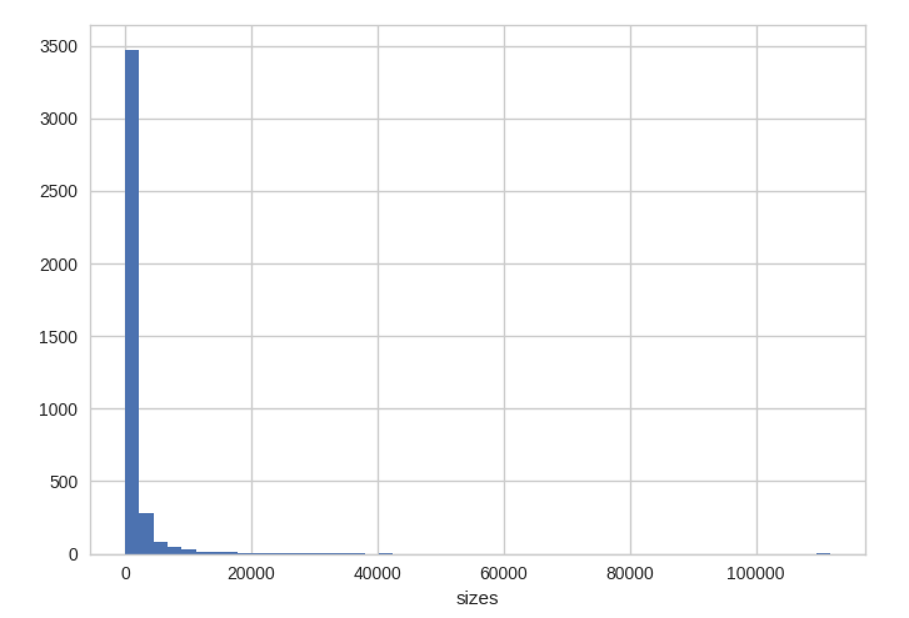
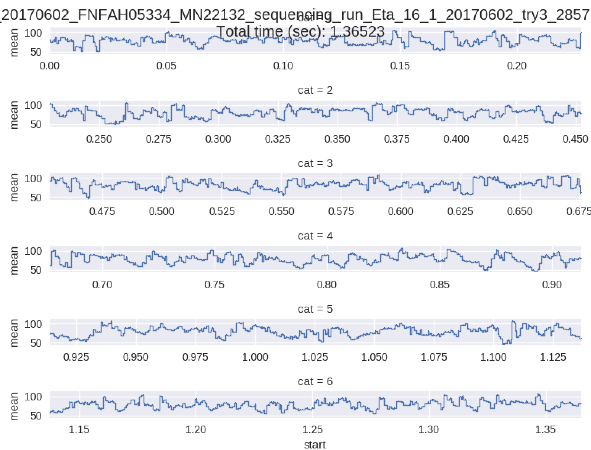
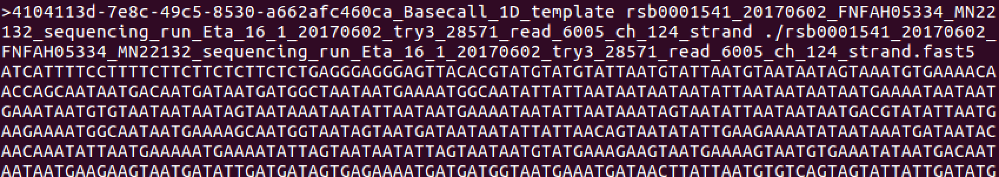

class: center, middle # Analysis III ## So we have some basecalled `fast5` files now! How did this change things? --- # `fast5` structure now: ``` /{attributes: file_version} |-UniqueGlobalKey/ | |-tracking_id/{attributes: standard tracking fields} | |-channel_id/{attributes: channel_number, digitisation, offset, range, sampling_rate} | |-context_tags/{attributes: set when the experiment is configured} |-Raw/ | |-Reads/ | |-Read_42/{attributes: start_time, duration, read_number, start_mux, read_id} | |-Signal{samples} |-Analyses/ | |-Segmentation_000{attributes: name, version} | | |-Configuration/ | | | |-stall_removal/{attributes: parameters for stall removal} | | | |-split_hairpin/{attributes: parameters for hairpin splitting} | | |-Summary/{attributes: return_status} | | | |-segmentation/{attributes: has_template, has_complement, first_sample_template, duration_template, first_sample_complement, duration_complement, num_events_template, num_events_complement} | |-Basecall_1D_000/{attributes: name, version} | | |-Configuration/ | | | |-basecall_1d/{attributes: parameters for basecalling} | | |-BaseCalled_template/ | | | |-Events{mean, stdv, start, length, model_state, move, weights, p_model_state, mp_state, p_mp_state, p_A, p_C, p_G, p_T} | | | |-Fastq{string} | | |-Summary/{attributes: return_status} | | | |-basecall_1d_template/{attributes: num_events, called_events, mean_qscore, strand_score, sequence_length, stay_prob, step_prob, skip_prob} | ``` --- # Is there a better way to examine this? Of course! ## poretools `poretools` is a toolkit for MinION data that can extract relevant data from `fast5` data into formats you know and love. - [poretools github page](https://github.com/arq5x/poretools) - [poretools publication in Bioinformatics](https://academic.oup.com/bioinformatics/article-lookup/doi/10.1093/bioinformatics/btu555) - [poretools documentation](https://poretools.readthedocs.io/en/latest/) poretools provides a simple command-line interface to examine your MinION basecalled data, determine overall quality, extract `fastq` or `fasta` sequences for downstream analysis, and more. --- class: center, middle # Let's examine how `poretools` acts in an analysis pipeline: ## Using Ubuntu VM on provided laptops --- # Open up `terminal` and lets try using poretools 1. First, we must initialize the software environment to use it: ``` source activate poretools ``` --- 2. We can now use the command-line to call `poretools` and see what commands are available: ``` poretools -h ``` ``` usage: poretools [-h] [-v] {combine,fastq,fasta,stats,hist,events,readstats,tabular,nucdist,metadata, index,qualdist,qualpos,winner,squiggle,times,yield_plot,occupancy, organise} ... optional arguments: -h, --help show this help message and exit -v, --version Installed poretools version ``` poretools is called as `poretools` and then `sub-command` --- Here are the sub-commands currently available: ``` [sub-commands]: combine Combine a set of FAST5 files in a TAR achive fastq Extract FASTQ sequences from a set of FAST5 files fasta Extract FASTA sequences from a set of FAST5 files stats Get read size stats for a set of FAST5 files hist Plot read size histogram for a set of FAST5 files events Extract each nanopore event for each read. readstats Extract signal information for each read over time. tabular Extract the lengths and name/seq/quals from a set of FAST5 files in TAB delimited format nucdist Get the nucl. composition of a set of FAST5 files metadata Return run metadata such as ASIC ID and temperature from a set of FAST5 files index Tabulate all file location info and metadata such as ASIC ID and temperature from a set of FAST5 files qualdist Get the qual score composition of a set of FAST5 files qualpos Get the qual score distribution over positions in reads winner Get the longest read from a set of FAST5 files squiggle Plot the observed signals for FAST5 reads. times Return the start times from a set of FAST5 files in tabular format yield_plot Plot the yield over time for a set of FAST5 files occupancy Inspect pore activity over time for a set of FAST5 files organise Move FAST5 files into a useful folder hierarchy ``` Lets give some a go! --- # We can easily take a directory of basecalled fast5 files and create a `fastq` file: ``` cd data/poretools/basecalled/workspace/ poretools fastq ./0 > my.fastq ``` **note**: although you can provide wildcards such as `*.fast5`, often it will be beyond the limit of expansion on your system. `poretools` is best when providing the directory specifically --- # Or a `fasta` file: ``` poretools fasta ./0 > my.fasta ``` From here, we have sequence data in formats that are more common to date and can be used with other analysis methods (to be discussed later today!) --- # `poretools` can also provide information regarding your sequencing stats: ``` poretools stats ./0 ``` --- # plots of read size histogram: ``` poretools hist --theme-bw ./0 ```  --- # examine the overall yield of reads over time (remember, the fast5 files keep track of all sorts of metadata for these purposes!): I can't get this to work on our VM. I think latest MinKNOW update screwed things up. ``` poretools yield_plot --plot-type reads ./0 ``` <img src='https://poretools.readthedocs.io/en/latest/_images/yield.reads.png' height='350'/> --- ## or by total basepairs: ``` poretools yield_plot --plot-type basepairs ./0 ``` --- # look at the quality score distribution over read position: ``` poretools qualpos ./0 ``` <img src='https://poretools.readthedocs.io/en/latest/_images/qualpos.png' height='350'/> --- # look at the overall performance of the pores on the flowcell (useful for finding positional / technical artifacts from sequencing) Again, broken ``` poretools occupancy ./0 ``` <img src='https://poretools.readthedocs.io/en/latest/_images/occupancy.png' height='350'/> --- You can use `poretools` to examine the initial signal traces from a single fast5 file as well using `squiggle` ``` poretools squiggle ./0/single.fast5 ```  --- # and most important, report the `winner` (longest read you got!) ``` poretools winner ./0 ``` What is the longest read in our test set? Prints out the single read record:  --- # Other notes There are a few other commands and options for these to create slightly different plots of to pull additional metrics from your basecalled fast5 files. Take a bit of time to explore our training reads, as well as your first set of real data, today!